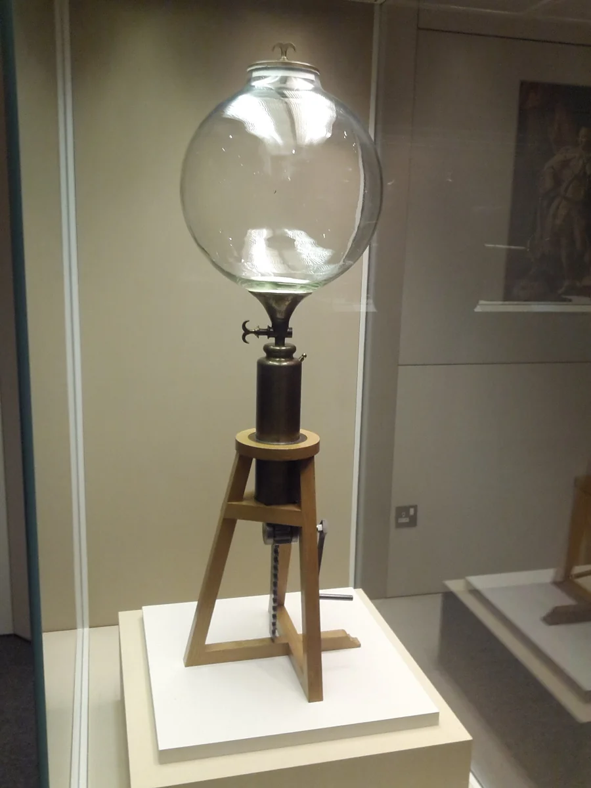
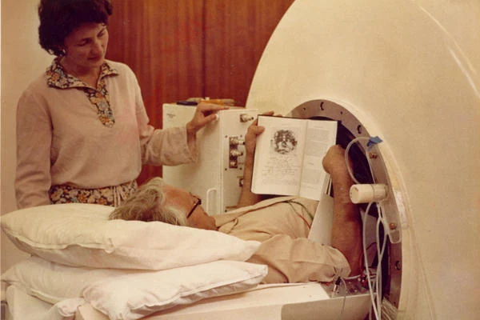
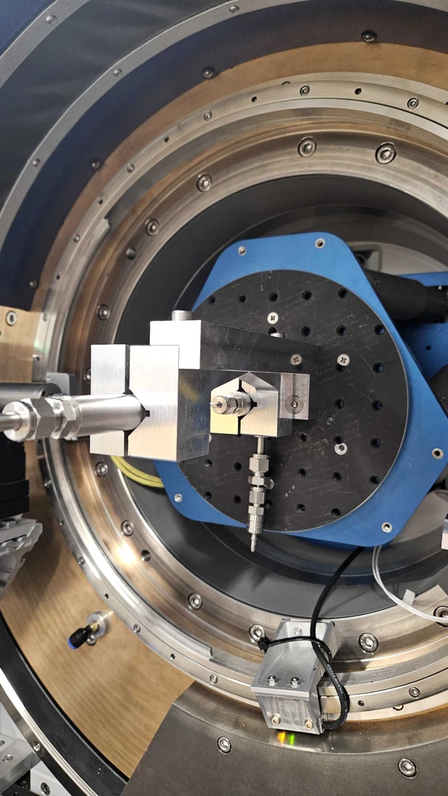

Boyle, Hooke & the pressure of gas
On Oxford’s High Street, Boyle and Hooke’s air-pump experiments helped establish the relationship between gas pressure and volume.
The Oxford story ↗Swagelok Central UK · Oxford
We’re looking forward
to seeing you on Friday.
ParkingYou’re welcome to park at Steve’s house, 13 Norham Road, Oxford OX2 6SF. Call Steve on 07786 312373 and he can come and walk with you to the office.
With Simon, Chris Jones, Adrian, Steve and Dan.
Explore SR3H’s products, AI connectivity and plugin development.
Grassroots Workspace
46 Woodstock Road, Oxford OX2 6HT
Directions ↗
Swagelok Central UK · apps & plugins
Find parts and drawings, prepare an order request or work through an engineering enquiry — all in one conversation.
Explore the possibilitiesScience & engineering

On Oxford’s High Street, Boyle and Hooke’s air-pump experiments helped establish the relationship between gas pressure and volume.
The Oxford story ↗
Oxford Instruments founders Martin and Audrey Wood later established Oxford Innovation, whose workspace business manages Grassroots. Oxford Instruments’ Nova 600 X-ray source drawings also specify Swagelok cooling connections.
The engineering connection ↗
At Harwell, Diamond Light Source uses intense X-rays to study changing materials. Swagelok connections help control gas flow around samples in its catalysis experiments.
Inside the experiments ↗